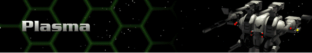

› |
› |
Plasma |

Legend
Ammo – the total ammunition capacity of the Herc for that individual weapon; n/a means the weapon uses no ammunition.
Range – the maximum distance, in hexes, over which the weapon can fire.
Rounds – the number of times the weapon can fire per turn; note that some weapons fire bursts of shots with a single firing action.
Energy – total energy cost in battery or reactor power to fire the weapon once.
SDam – the total damage the weapon inflicts on the facing shield side of a target.
ADam – the total damage a weapon inflicts on the target’s armor if no shields are up.
Tech – the Technology Level at which the weapon is acquired.
| Plasma Weapons | Description | Ammo | Range | Rounds | Energy | SDam | ADam | Tech |
|---|---|---|---|---|---|---|---|---|
| Plasma Cannon | The first of the heavy energy weapons, the Plasma Cannon consumes huge amounts of energy, but delivers terrific blows to shields and armor. | n/a | 9 | 1 | 50 | 150 | 75 | 3 |
| Heavy Plasma Cannon | This is simply a twin cannon that shares a single barrel. The combined shot is terrifying and can often down an enemy Cybrid in a single blast. | n/a | 9 | 1 | 75 | 300 | 150 | 3 |
| Plasma Beam | A variant of the heavy plasma cannon that uses advanced technology to keep the emerging plasma from being dispersed, thereby increasing range. | n/a | 12 | 1 | 60 | 270 | 135 | 7 |
| Plasma Mortar | Combines the usefulness of the Blast Mortar with the penetrating damage of plasma for a superior indirect fire weapon. | n/a | 12 | 2 | 16 | 80 | 40 | 7 |
| Fusion Flamer | A second generation of plasma technology that delivers a tremendous punch, especially against a foe that has lost its shields. | n/a | 9 | 1 | 30 | 128 | 96 | 8 |
| Fusion Cannon | Though expensive and very power hungry, the Fusion Cannon can deliver in one gun what once took an entire Herc’s payload. | n/a | 9 | 1 | 45 | 192 | 128 | 8 |
| Fusion Annihilator | The most terrifying weapon ever designed, this delivers a single blast that will usually destroy any Cybrid. | n/a | 9 | 1 | 60 | 288 | 192 | 8 |
| Fusion Mortar | Takes advanced fusion technology and applies it to the Plasma Mortar. It is without peer as an indirect energy weapon. | 24 | 12 | 2 | 18 | 108 | 72 | 10 |
| Fusion Gatling | A rapid-fire fusion cannon that can deal with shielded or unshielded targets with equal ease. It requires significant power. | n/a | 9 | 4 | 15 | 90 | 60 | 12 |